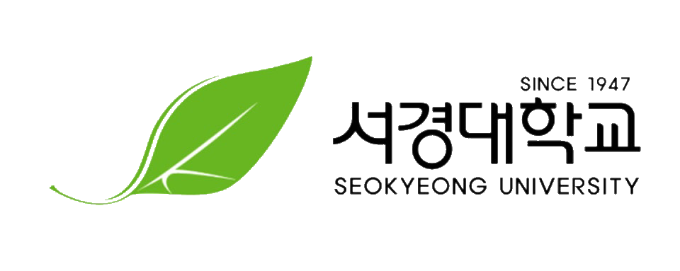

내 성향에 찰떡인 IT 직군은 무엇일까? 아래에서 내 MBTI를 찾아보세요!
| MBTI | 추천 직무 |
|---|---|
| INTJ | 머신러닝 엔지니어, 데이터 사이언티스트 |
| INFJ | 소프트웨어 아키텍트, 데이터 분석가 |
| INFP | 데이터 분석가, AI 윤리 전문가 |
| INTP | 알고리즘 엔지니어, 데이터 사이언티스트, R&D 개발자 |
| ENFP | 프로덕트 매니저, 데이터 시각화 전문가 |
| ENTP | AI 연구원, 기술 창업가, 블록체인 개발자 |
| ENTJ | CTO, IT 전략 컨설턴트, 데이터 엔지니어 |
| MBTI | 추천 직무 |
|---|---|
| ISTJ | 시스템 엔지니어, DBA, 백엔드 개발자 |
| ISFJ | IT 프로젝트 매니저, QA 엔지니어, 테크니컬 서포트 |
| ISTP | 백엔드 개발자, 네트워크 엔지니어, DevOps 엔지니어 |
| ISFP | 프론트엔드 개발자, 게임 개발자 |
| ESTP | 사이버 보안 전문가, 네트워크 엔지니어, 시스템 관리자 |
| ESFP | 게임 개발자, 멀티미디어 개발자, IT 컨설턴트 |
| ESTJ | IT 프로젝트 매니저, ERP 엔지니어, 정보 보안 관리자 |
| ESFJ | IT 컨설턴트, 고객 기술 지원, HR 테크 매니저 |
| ENFJ | 프로덕트 매니저, 테크 에반젤리스트, 데이터 전략가 |
컴퓨터 시스템의 설계, 개발, 유지 보수를 다루며 소프트웨어 엔지니어링, 프로그래밍, 데이터베이스 관리, 운영체제, 네트워크, 인공지능, 보안, 웹 개발 등 다양한 분야를 포괄합니다. 최고 시설의 6개 연구실과 9명의 전임교수를 보유하며, 과학기술정통부 SW전문인재양성사업에 선정되었습니다(백엔드 풀스택 트랙).
인공지능과 빅데이터 기술을 통합하여 데이터를 분석하고 의미 있는 정보를 도출하며, 데이터 사이언스, 머신러닝, 딥러닝, 컴퓨터 비전 등 다양한 분야를 이룹니다. 최고 시설의 6개 연구실과 9명의 전임교수를 보유하며, 과학기술정통부 SW전문인재양성사업에 선정되었습니다(AI빅데이터 트랙).